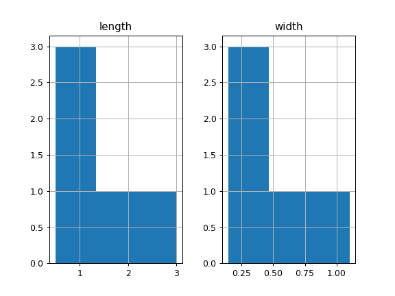

pandas.DataFrame.hist¶
-
DataFrame.hist(column=None, by=None, grid=True, xlabelsize=None, xrot=None, ylabelsize=None, yrot=None, ax=None, sharex=False, sharey=False, figsize=None, layout=None, bins=10, **kwds)[source]¶ Make a histogram of the DataFrame’s.
A histogram is a representation of the distribution of data. This function calls
matplotlib.pyplot.hist(), on each series in the DataFrame, resulting in one histogram per column.Parameters: data : DataFrame
The pandas object holding the data.
column : string or sequence
If passed, will be used to limit data to a subset of columns.
by : object, optional
If passed, then used to form histograms for separate groups.
grid : boolean, default True
Whether to show axis grid lines.
xlabelsize : int, default None
If specified changes the x-axis label size.
xrot : float, default None
Rotation of x axis labels. For example, a value of 90 displays the x labels rotated 90 degrees clockwise.
ylabelsize : int, default None
If specified changes the y-axis label size.
yrot : float, default None
Rotation of y axis labels. For example, a value of 90 displays the y labels rotated 90 degrees clockwise.
ax : Matplotlib axes object, default None
The axes to plot the histogram on.
sharex : boolean, default True if ax is None else False
In case subplots=True, share x axis and set some x axis labels to invisible; defaults to True if ax is None otherwise False if an ax is passed in. Note that passing in both an ax and sharex=True will alter all x axis labels for all subplots in a figure.
sharey : boolean, default False
In case subplots=True, share y axis and set some y axis labels to invisible.
figsize : tuple
The size in inches of the figure to create. Uses the value in matplotlib.rcParams by default.
layout : tuple, optional
Tuple of (rows, columns) for the layout of the histograms.
bins : integer or sequence, default 10
Number of histogram bins to be used. If an integer is given, bins + 1 bin edges are calculated and returned. If bins is a sequence, gives bin edges, including left edge of first bin and right edge of last bin. In this case, bins is returned unmodified.
**kwds
All other plotting keyword arguments to be passed to
matplotlib.pyplot.hist().Returns: - axes : matplotlib.AxesSubplot or numpy.ndarray of them
See also
matplotlib.pyplot.hist- Plot a histogram using matplotlib.
Examples
This example draws a histogram based on the length and width of some animals, displayed in three bins
>>> df = pd.DataFrame({ ... 'length': [1.5, 0.5, 1.2, 0.9, 3], ... 'width': [0.7, 0.2, 0.15, 0.2, 1.1] ... }, index= ['pig', 'rabbit', 'duck', 'chicken', 'horse']) >>> hist = df.hist(bins=3)
